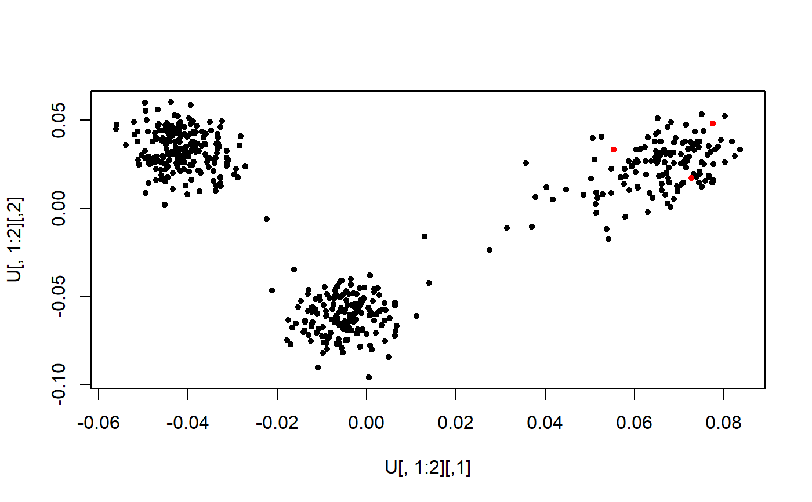
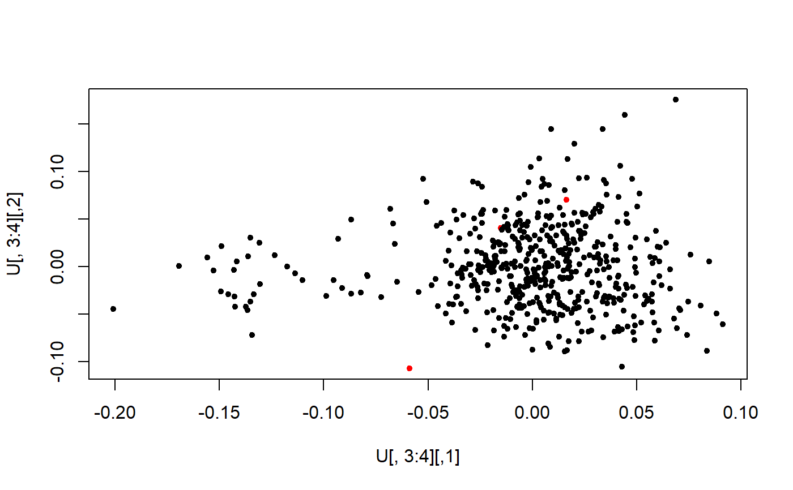
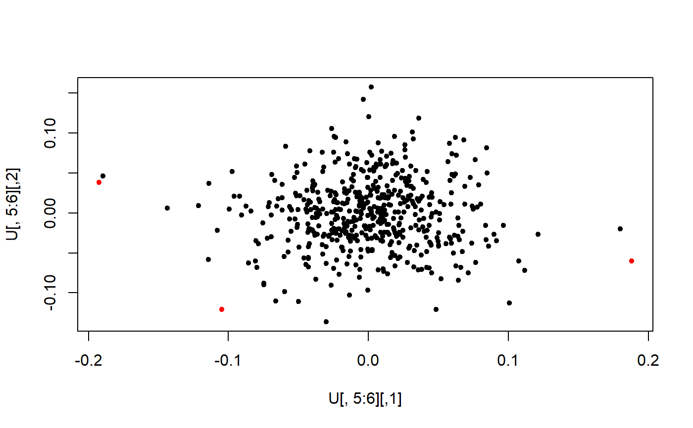

Probabilistic set distance
prob_dist(U, kNN = 5, robMaha = FALSE, ncores = 1)A matrix, from which to detect outliers (rows). E.g. PC scores.
Number of nearest neighbors to use. Default is 5.
Whether to use a robust Mahalanobis distance instead of the
normal euclidean distance? Default is FALSE, meaning using euclidean.
Number of cores to use. Default is 1.
Kriegel, Hans-Peter, et al. "LoOP: local outlier probabilities." Proceedings of the 18th ACM conference on Information and knowledge management. ACM, 2009.
X <- readRDS(system.file("testdata", "three-pops.rds", package = "bigutilsr"))
svd <- svds(scale(X), k = 10)
U <- svd$u
test <- prob_dist(U)
plof <- test$dist.self / test$dist.nn
plof_ish <- test$dist.self / sqrt(test$dist.nn)
plot(U[, 1:2], col = (plof_ish > tukey_mc_up(plof_ish)) + 1, pch = 20)

plot(U[, 3:4], col = (plof_ish > tukey_mc_up(plof_ish)) + 1, pch = 20)

plot(U[, 5:6], col = (plof_ish > tukey_mc_up(plof_ish)) + 1, pch = 20)
